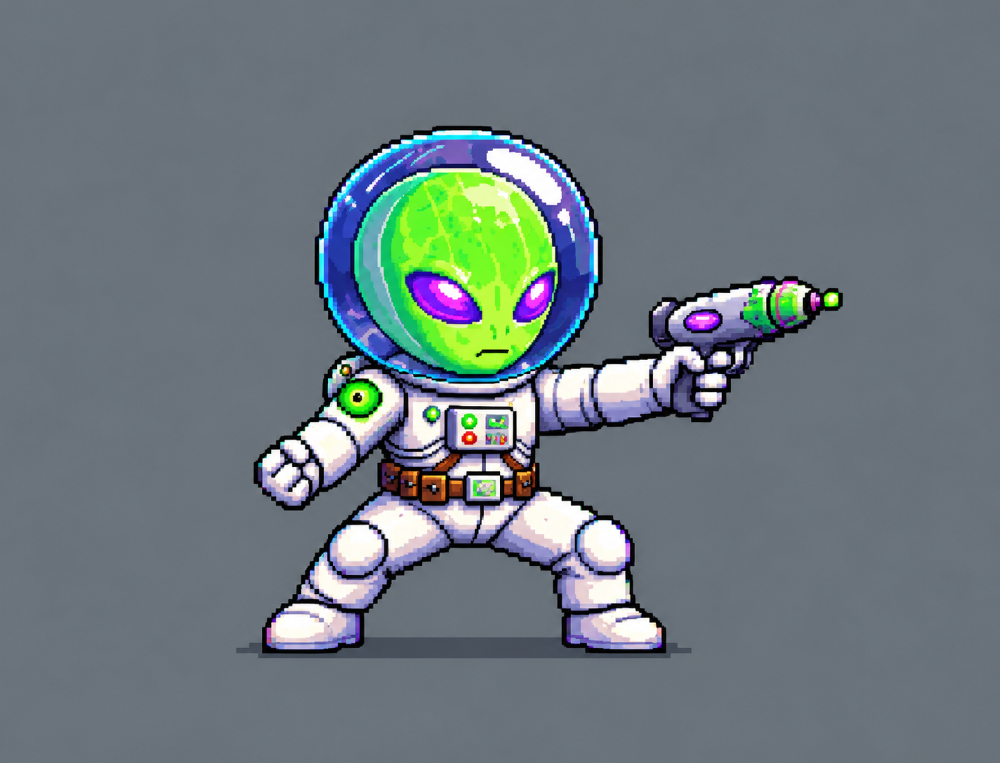
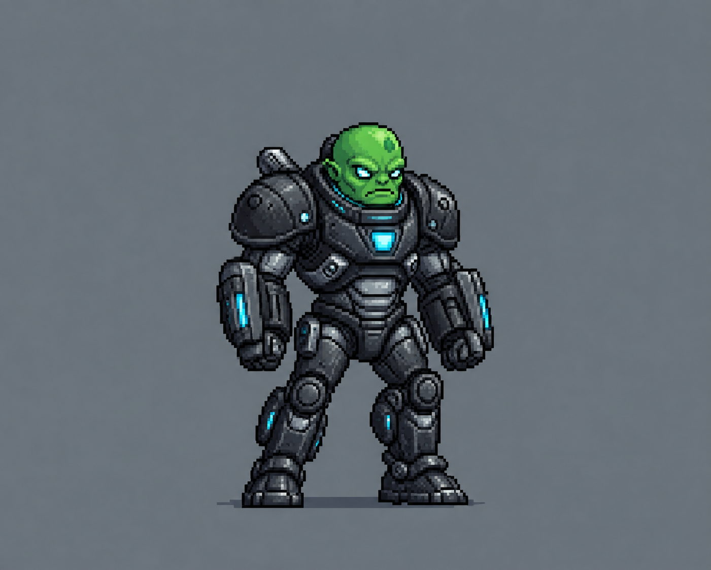
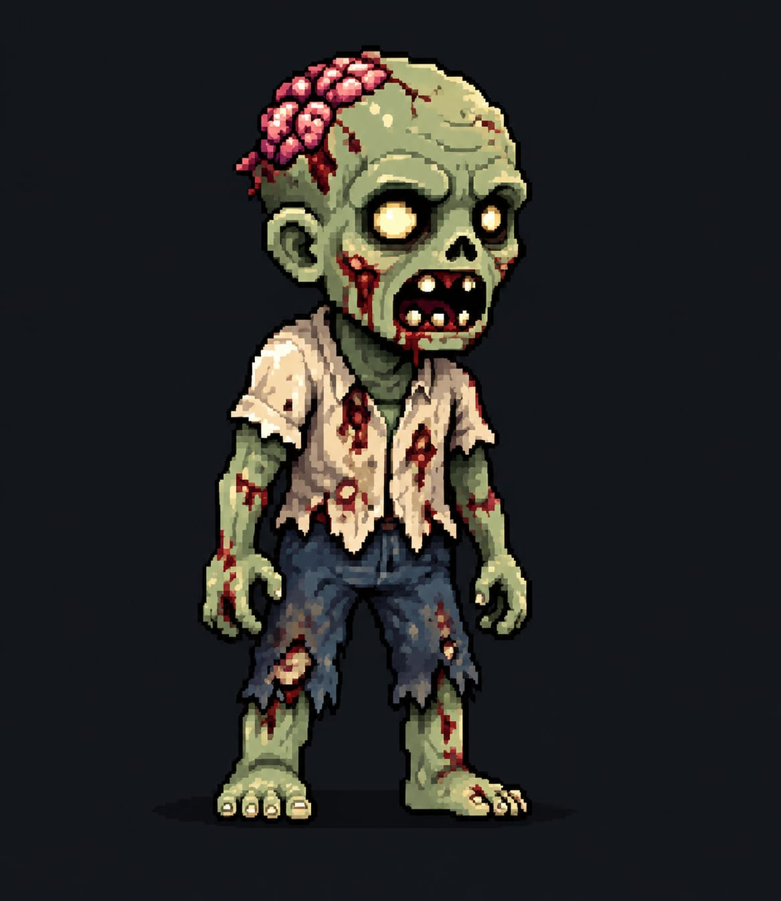
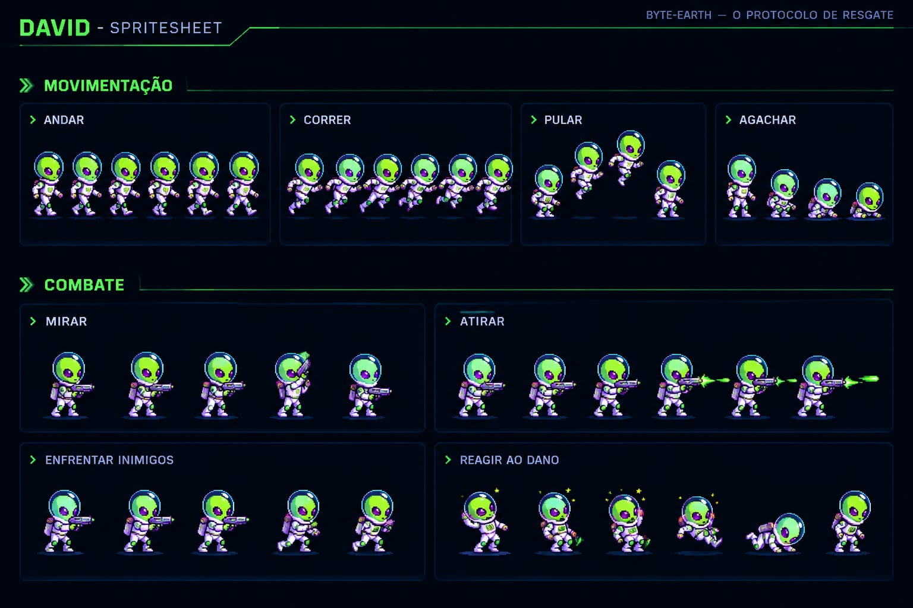

Introdução
Conheça a proposta de Byte-Earth.
Sobre o jogo:
Byte-Earth — O Protocolo de Resgate é um jogo de plataforma e 2D em que você controla o alienígena David e vai em busca de salvar a Terra que está na situação de um apocalipse zumbi, será que você e David serão capazaes de salvar o mundo desta ameaça... (e de quem está orquestrando tudo).
Gênero
Aventura / ação 2D
Ambientação
Terra apocalíptica
Sinopse
O começo da jornada.
O Protocolo de Resgate
Durante uma exploração espacial, o alienígena David tem sua nave derrubada por um pulso eletromagnético misterioso e acaba caindo na Terra. Ao despertar nos destroços, ele encontra um planeta devastado, quase sem vida humana e dominado por uma perigosa corrupção digital. Armado apenas com seu Blaster de Depuração, David precisa desbravar cidades abandonadas e instalações subterrâneas, enfrentando criaturas corrompidas e superando complexos desafios de lógica, programação e matemática. Sua missão é sobreviver e desvendar o grande enigma: o que realmente aconteceu com a humanidade? “No mundo onde tudo pode ser reprogramado, até o destino da humanidade depende de uma escolha.”
Objetivo
Explorar o ambiente, sobreviver às ameaças, encontrar itens importantes e avançar até descobrir como executar o protocolo de resgate.
Personagens
Os personagens de Byte-Earth.
Alienígena David
David é o personagem principal, controlado
pelo jogador.
Ele possui um visual alienígena,
utiliza um traje espacial e sua
arma: Blaster de Depuração para enfrentar os zumbis e outros perigos
encontrados durante a missão.

Alienígena Paul
Paul é o antagonista principal, enfrentando ou se aliando
ao jogador.
Ele possui um visual alienígena,
utiliza um traje espacial e sua
arma: Blaster de Depuração Zumbi para enfrentar o jogador e seus possíveis aliados
encontrados durante a missão.

Zumbi
Zumbi comum
Quem será que está por trás disso? São muitos!

Mecânicas
Como o jogador interage com o jogo.
Movimentação
• Andar
• Correr
• Pular
• Agachar
Combate
• Mirar
• Atirar
• Enfrentar inimigos
• Reagir ao dano
Imagem das mecânicas

Referências
Referências e materiais utilizados no desenvolvimento de Byte-Earth.
Inspirações
Além da imaginação fértil dos desenvolvedores, alguns jogos e projetos que serviram de inspiração foram:
Mega man: a referência mais evidente, com o protagonista tendo características semelhantes ao Mega-man, já que
David é pequeno e está em visão lateral, com a estrutura muito parecida com o personagem.
Alien Hominid: A história de Alien Hominid é parecida com a história de Byte-Earth, já que um alien(muito parecido com
David inclusive) é submetido a situações caóiticas em meio a um cenário de destruição e cheio de combate.
Jogos de apocalipse zumbi em geral: O cenário zumbi foi inspirado no sucesso de séries e jogos como The Walking Dead, Resident Evil,
Left 4 Dead e etc
Tutorial
Aprenda como jogar Byte-Earth.
Como jogar
Confira o tutorial para conhecer os comandos e aprender o básico para começar sua aventura em Byte-Earth.
Vídeo da gameplay
Veja Byte-Earth em ação.
Gameplay do jogo
Assista a um vídeo mostrando um pouco da jogabilidade, dos cenários e dos desafios encontrados durante a aventura.
Baixe o jogo!
Em breve você poderá baixar o jogo por aqui.
Download
Link do github:
https://github.com/ophkkj/Byte-Earth-Jogo-2026
SAC
Entre em contato com os desenvolvedores:
davielmerror@gmail.com
ph13012000@gmail.com
guilherme.lima271985@gmail.com